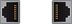
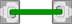
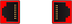
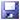

Precondition: To write to Control Unit parameters and drive parameters and activate them, as a minimum, the "Service" access level is required.
Using the "Activate drives" softkey, in the "Drive state overview" open a table listing all of the drive objects, which shows the actual state of parameter p0105: "Activate/deactivate drive objects". Further, the connection status is shown as a symbol:
DO status (p0105) | Symbol | Significance |
|---|
[0] deactivated |  | The component is not inserted, and the status is deactivated. |
[0] deactivated | | The component is inserted, and the status is deactivated |
[1] activated |  | The component is inserted, and the status is activated. |
[1] activated |  | The component is inserted, and the status is activated: Component with fault. |
[2] deactivated without hardware | - without symbol - | The component is not inserted, the status is deactivated: However, the component is included in the target topology. |
| Note |
Status p0105 = [2] deactivated without hardwareIn the "Drive state overview", only the two states "[1] activated" and "[0] deactivated" are listed for a drive object. If a drive object exists with status [2] deactivated without hardware, then the status must be changed to "[0] deactivated" and then the hardware component must be inserted and connected. |
The "Data backup" column shows the following symbols:
|  | The backup of the drive parameters for every drive object is saved at: /user/sinamics/smi/backup |
| | Parameter data of drive objects are copied to the CompactFlash card of the control system from a Create MyConfig package. If the configuration parameters are overwritten when subsequently connecting the motor with DQI encoder for the automatic controller data calculation, then when activating, these parameters are again written to the drive object. |
⇒ Further actions: Example: Subsequently installing a component